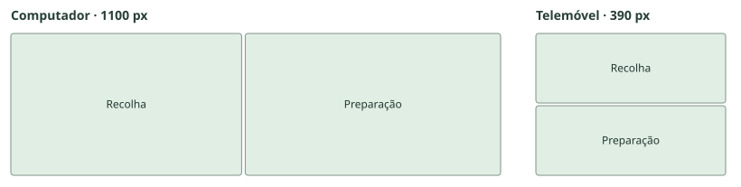

Recolha
Confere o número e recebe o pedido.
Posto A
Café da turma / Flexbox / F04
Objetivo: Mostra os balcões Recolha e Preparação lado a lado. Os dois começam com a mesma largura. Quando a janela crescer, a Preparação ganha mais espaço; quando encolher, perde mais. No telemóvel, ficam empilhados.
Larguras para testar: 390 px, 768 px e 1100 px. São larguras da janela do navegador. Só escreves uma media query se o exercício a pedir.
No CSS: escreve 16px, sem espaço entre o número e a
unidade.
Primeiro passo: Abre style.css no editor e lê a etapa 1.
Quando fizeres uma alteração, guarda o ficheiro e atualiza esta página para veres o que
mudou.
Este esquema mostra as posições, sem escala. Para a largura intermédia, usa os testes no fim.

Área de trabalho · Balcões de serviço
Confere o número e recebe o pedido.
Posto A
Mói o café, aquece o leite e prepara a bandeja.
Posto B
Já conheces: Larguras em píxeis, largura máxima e media queries.
Com apoio nesta ficha: flex-basis é o ponto de partida. flex-grow reparte o que sobra; flex-shrink reparte o que falta. Mede a diferença até à base, não só o tamanho final.
Encontras as instruções de cada etapa em style.css.
Usa o modo responsivo do navegador. Experimenta 390 px (telemóvel), 768 px (intermédio) e 1100 px (computador).
Assinala os testes que passaram. As marcas desaparecem quando atualizas a página; guarda o
resultado em registo.md.
Mantém as duas bases, troca apenas os fatores de redução e repete a medição a 768 px.